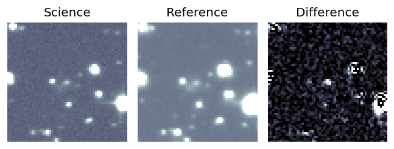
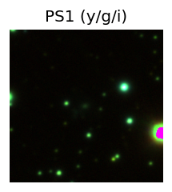
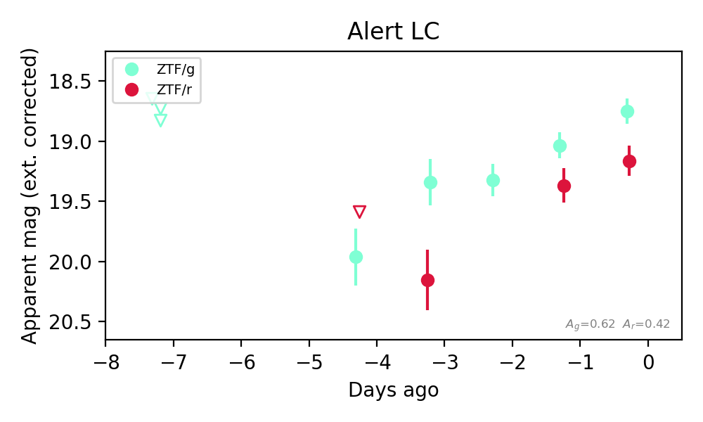

Candidate List 20261003Last night — ZTF: 2,378 passed basic cuts (26 young) · LSST: 0 passed basic cuts (0 young)Previous Day Next Day
Section 1: New Sources (age<1d) Section 2: Old (1-5d) sources observed last nightplaceholder
Section 1: New Afterglow/FBOT Cands Last Night (0)
Section 2: Older Sources Observed Last Night (5)
0. [ZTF] ZTF26abxpksn (Afterglow?) [Back to Top] [Share] [Trigger Swift] [Fritz Alert] [Fritz Source] [Lasair]RA, Dec: 280.15605, 7.98837 18h40m37.45s, 7d59m18.14sGalactic (l, b): 38.8412, 6.02366 ext(g-r) = 0.556


TESS: Sectors [ 80 118]
PS1: 0 sources in 3 arcsec
LegacySurvey: 0 sources in 3 arcsec


Extinction-corrected gr color:
From alerts: -1.38 +/- 99 mag
Extinction-corrected gi color:
From alerts: -0.71 +/- 99 mag
Rise Rate:
r: 1.46 mag/day
Fade Rate:
g: 0.12 mag/day
r: 0.67 mag/day
1. [ZTF] ZTF26abydudp (FBOT?) [Back to Top] [Share] [Trigger Swift] [Fritz Alert] [Fritz Source] [Lasair]RA, Dec: 359.61902, 13.51659 23h58m28.56s, 13d30m59.73sGalactic (l, b): 103.73447, -47.37137 ext(g-r) = 0.057


TESS: Sectors [42 83]
SDSS (<15 kpc):Found SDSS phot-z: z=0.55; peak abs mag = -23.67
NED host (10 arcsec):Found WISEA J235829.02+133101.5 (G, 7.0″); NED spec-z: z=0.0281 [zflag SUN]; peak abs mag = -16.63
PS1: 0 sources in 3 arcsec
LegacySurvey: 1 sources in 3 arcsec Closest: d = 3.96 arcsec, 137.4 deg (east of north) photoz=0.22 (68% bounds 0.04, 0.67), type=EXP peak abs mag (ext. corrected) = -21.41 (68% bounds -17.45, -24.22)

Extinction-corrected gr color:
From alerts: -0.2 +/- 0.14 mag
Extinction-corrected gi color:
From alerts: -0.52 +/- 0.19 mag
Extinction-corrected ri color:
From alerts: -0.43 +/- 0.21 mag
Rise Rate:
g: 0.21 mag/day
r: 0.14 mag/day
i: 0.09 mag/day
Fade Rate:
2. [ZTF] ZTF26abyityt (FBOT?) [Back to Top] [Share] [Trigger Swift] [Fritz Alert] [Fritz Source] [Lasair]RA, Dec: 308.69055, 25.32867 20h34m45.73s, 25d19m43.21sGalactic (l, b): 67.4886, -8.94186 ext(g-r) = 0.198


TESS: Sectors [ 14 15 41 55 81 82 120]
PS1: 1 source in 3 arcsec Closest: d = 0.97 arcsec photoz=0.11+/-0.02 peak abs mag = -19.90
LegacySurvey: 0 sources in 3 arcsec

Extinction-corrected gr color:
From alerts: -0.41 +/- 0.16 mag
Rise Rate:
g: 0.27 mag/day
r: 0.32 mag/day
Fade Rate:
3. [ZTF] ZTF26abysngk (FBOT?) [Back to Top] [Share] [Trigger Swift] [Fritz Alert] [Fritz Source] [Lasair]RA, Dec: 20.80665, -3.1305 1h23m13.60s, -3d-7m-49.80sGalactic (l, b): 141.87093, -64.82688 ext(g-r) = 0.04


TESS: Sectors [ 3 30 42 43 70 97]
SDSS (<15 kpc):Found SDSS phot-z: z=0.13; peak abs mag = -19.57
PS1: 0 sources in 3 arcsec
LegacySurvey: 1 sources in 3 arcsec Closest: d = 0.33 arcsec, 58.0 deg (east of north) photoz=0.08 (68% bounds 0.06, 0.11), type=SER peak abs mag (ext. corrected) = -18.5 (68% bounds -17.92, -19.04)

Extinction-corrected gr color:
From alerts: -0.01 +/- 0.23 mag
Extinction-corrected gi color:
From alerts: -0.21 +/- 0.3 mag
Extinction-corrected ri color:
From alerts: -0.2 +/- 0.28 mag
Consistent with synchrotron, g-r>0!
Rise Rate:
g: 0.09 mag/day
r: 0.36 mag/day
i: 0.04 mag/day
Fade Rate:
4. [ZTF] ZTF26abymrub (FBOT?) [Back to Top] [Share] [Trigger Swift] [Fritz Alert] [Fritz Source] [Lasair]RA, Dec: 351.94755, 41.95062 23h27m47.41s, 41d57m2.22sGalactic (l, b): 106.69862, -18.26926 ext(g-r) = 0.112


TESS: Sectors [16 57 84]
PS1: 1 source in 3 arcsec Closest: d = 4.60 arcsec photoz=0.49+/-0.65 peak abs mag = -27.83
LegacySurvey: 0 sources in 3 arcsec

Extinction-corrected gr color:
From alerts: -0.48 +/- 0.05 mag
Rise Rate:
g: 5.04 mag/day
r: 2.28 mag/day
Fade Rate: